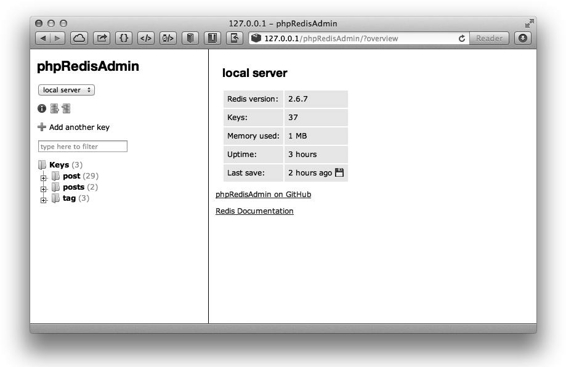
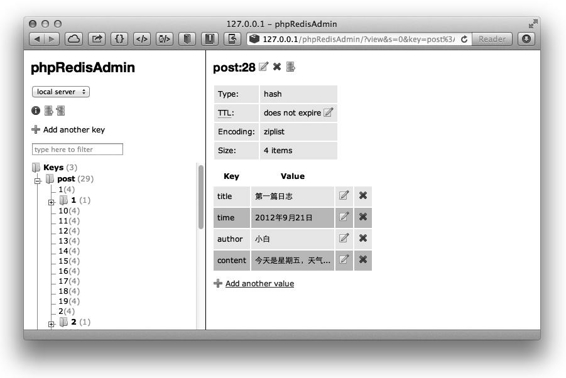
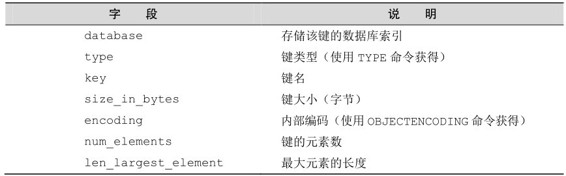

9.3 管理工具
工欲善其事，必先利其器。在使用 Redis 的时候如果能够有效利用 Redis 的各种管理工具，将会大大方便开发和管理。
相信大家对 redis-cli 已经很熟悉了，作为 Redis 自带的命令行客户端，你可以从任何安装有Redis的服务器中找到它，所以对于管理Redis而言redis-cli是最简单实用的工具。
redis-cli可以执行大部分的Redis命令，包括查看数据库信息的INFO命令，更改数据库设置的CONFIG命令和强制进行RDB快照的SAVE命令等。下面介绍几个管理Redis时非常有用的命令。
1．耗时命令日志
当一条命令执行时间超过限制时，Redis会将该命令的执行时间等信息加入耗时命令日志（slow log）以供开发者查看。可以通过配置文件的 slowlog-log-slower-than参数设置这一限制，要注意单位是微秒（1 000 000 微秒相当于1秒），默认值是10 000。耗时命令日志存储在内存中，可以通过配置文件的 slowlog-max-len 参数来限制记录的条数。
使用 SLOWLOG GET命令来获得当前的耗时命令日志，如：
redis> SLOWLOG GET
1) 1) (integer) 4
2) (integer) 1356806413
3) (integer) 58
4) 1) "get"
2) "foo"
2) 1) (integer) 3
2) (integer) 1356806408
3) (integer) 34
4) 1) "set"
2) "foo"
3) "bar"
每条日志都由以下4个部分组成：
（1）该日志唯一ID；
（2）该命令执行的Unix时间；
（3）该命令的耗时时间，单位是微秒；
（4）命令及其参数。
提示 为了产生一些耗时命令日志作为演示，这里将 slowlog-log-slower-than参数值设置为0，即记录所有命令。如果设置为负数则会关闭耗时命令日志。
2．命令监控
Redis提供了MONITOR命令来监控Redis执行的所有命令，redis-cli同样支持这个命令，如在redis-cli中执行MONITOR：
redis> MONITOR
OK
这时 Redis 执行的任何命令都会在 redis-cli 中打印出来，如我们打开另一个 redis-cli执行 SET foo bar命令，在之前的redis-cli中会输出如下内容：
1356806981.885237 [0 127.0.0.1:57339] "SET" "foo" "bar
MONITOR命令非常影响Redis的性能，一个客户端使用MONITOR命令会降低Redis将近一半的负载能力。所以MONITOR命令只适合用来调试和纠错。
补充知识 Instagram[3] 团队开发了一个基于 MONITOR 命令的 Redis 查询分析程序redis-faina。redis-faina可以根据MONITOR命令的监控结果分析出最常用的命令、访问最频繁的键等信息，对了解Redis的使用情况帮助很大。
redis-faina 的项目地址是 https://github.com/Instagram/redis-faina，直接下载其中的redis-faina.py文件即可使用。
redis-faina.py的输入值为一段时间的MONITOR命令执行结果。如：
redis-cli MONITOR | head -n <要分析的命令数> | ./redis-faina.py
当Redis 中的键较多时，使用redis-cli管理数据并不是很方便，就如同管理MySQL时有人喜欢使用phpMyAdmin一样，Redis同样有一个PHP开发的网页端管理工具phpRedis Admin。phpRedisAdmin 支持以树形结构查看键列表，编辑键值，导入/导出数据库数据，查看数据库信息和查看键信息等功能。
1．安装phpRedisAdmin
安装phpRedisAdmin的方法如下：
git clone https://github.com/ErikDubbelboer/phpRedisAdmin.git
cd phpRedisAdmin
phpRedisAdmin依赖PHP的Redis客户端Predis，所以还需要执行下面两个命令下载Predis：
git submodule init
git submodule update
2．配置数据库连接
下载完 phpRedisAdmin 后需要配置 Redis 的连接信息。默认 phpRedisAdmin 会连接到127.0.0.1，端口6379，如果需要更改或者添加数据库信息可以编辑includes文件夹中的config.inc. php 文件。
3．使用phpRedisAdmin
安装PHP和Web服务器（如Nginx），并将phpRedisAdmin文件夹存放到网站目录中即可访问，如图9-1所示。

图9-1 phpRedisAdmin 界面
phpRedisAdmin自动将Redis的键以“:”分隔并用树形结构显示出来，十分直观。如post:1和post:2两个键都在post树中。
点击一个键后可以查看键的信息，包括键的类型、生存时间及键值，并且可以很方便地编辑，如图9-2所示。

图9-2 查看键信息
4．性能
phpRedisAdmin在获取键列表时使用的是KEYS*命令，然后对所有的键使用TYPE命令来获取其数据类型，所以当键非常多的时候性能并不高（对于一个有一百万个键的Redis数据库，在一台普通个人计算机上使用 KEYS *命令大约会花费几十毫秒）。由于Redis 使用单线程处理命令，所以对生产环境下拥有大数据量的数据库来说不适宜使用phpRedisAdmin管理。
Rdbtools 是一个Redis 的快照文件解析器，它可以根据快照文件导出JSON 数据文件、分析 Redis 中每个键的占用空间情况等。Rdbtools 是使用 Python 开发的，项目地址是 https://github.com/sripathikrishnan/redis-rdb-tools。
1．安装Rdbtools
使用如下命令安装Rdbtools：
git clone https://github.com/sripathikrishnan/redis-rdb-tools
cd redis-rdb-tools
sudo python setup.py install
2．生成快照文件
如果没有启用RDB持久化，可以使用SAVE命令手动使Redis生成快照文件。
3．将快照导出为JSON格式
快照文件是二进制格式，不利于查看，可以使用Rdbtools来将其导出为JSON格式，命令如下：
rdb --command json /path/to/dump.rdb > output_filename.json
其中/path/to/dump.rdb是快照文件的路径，output_filename.json为要导出的文件路径。
4．生成空间使用情况报告
Rdbtools能够将快照文件中记录的每个键的存储情况导出为CSV文件，可以将该CSV文件导入到Excel等数据分析工具中分析来了解Redis的使用情况。命令如下：
rdb -c memory /path/to/dump.rdb > output_filename.csv
导出的CSV文件的字段及说明如表9-1所示。
表9-1 Rdbtools 导出的CSV文件字段说明

注 释
[1]. http://oldblog.antirez.com/post/redis-manifesto.html
[2]. Redis 可能会在2.8 版本中支持绑定多个地址，参见https://github.com/antirez/redis/issues/274。